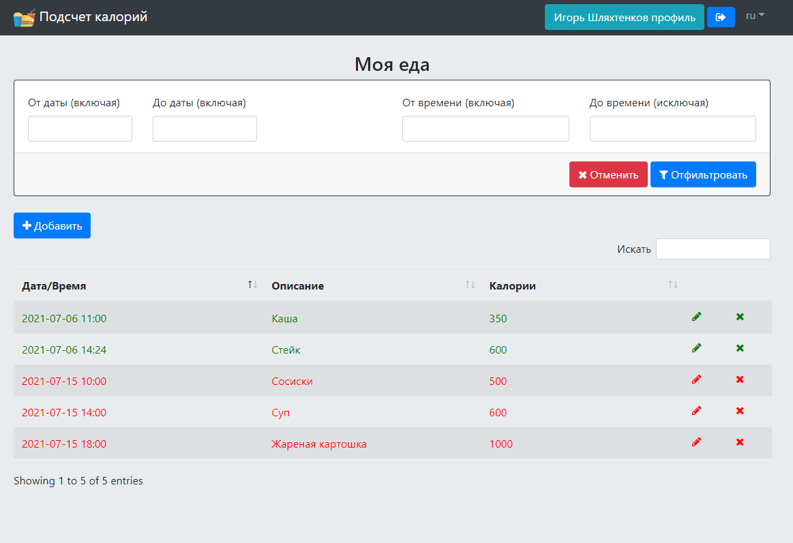

Использованные технологии
Maven
Spring MVC
Spring Data JPA
Spring Data JDBC
Hibernate
Spring Security
REST (Jackson)
Ehcache
OpenAPI 2
JUnit 5
JSP
JSTL
jQuery + plugins
DataTables
Bootstrap 4
Описание приложения
Данное приложение позволяет пользователям вносить информацию об употребленной пище и количестве калорий, которое она содержит, а также следить за превышением заданной ежедневной нормы потребляемых калорий.
Взаимодействие с приложением осуществляется через UI (по AJAX) и по REST интерфейсу с базовой авторизацией, имеется поддержка интернационализации (русский/английский языки).
В приложении используется два вида пользовательских ролей: пользователи и администраторы. Каждой роли присущи свои выполняемые задачи.
Регистрация, профиль
Пользователи могут зарегистрироваться в приложении, заполнив данные об учетной записи на странице регистрации.
Любому авторизованному пользователю приложения доступна возможность просмотреть свой профиль, изменить имя, адрес электронной почты, ежедневную норму калорий, а также сменить текущий пароль.

Данные о еде
Авторизованные пользователи могут просматривать информацию о своих приемах пищи с возможностью фильтрации по датам и времени, добавлять новые приемы пищи, редактировать и удалять имеющиеся.
Цвет записи в таблице еды зависит от того, превышает ли сумма калорий за день установленную норму.
Задачи администраторов
Основной задачей администраторов является менеджмент пользователей приложения.
Они имеют право создавать новых пользователей, назначая им соответствующие права доступа, редактировать информацию об уже имеющихся пользователях, блокировать и удалять их учетные записи. Им доступна возможность изменять пароли пользователей, что удобно использовать, если пользователь не может вспомнить свой текущий пароль.